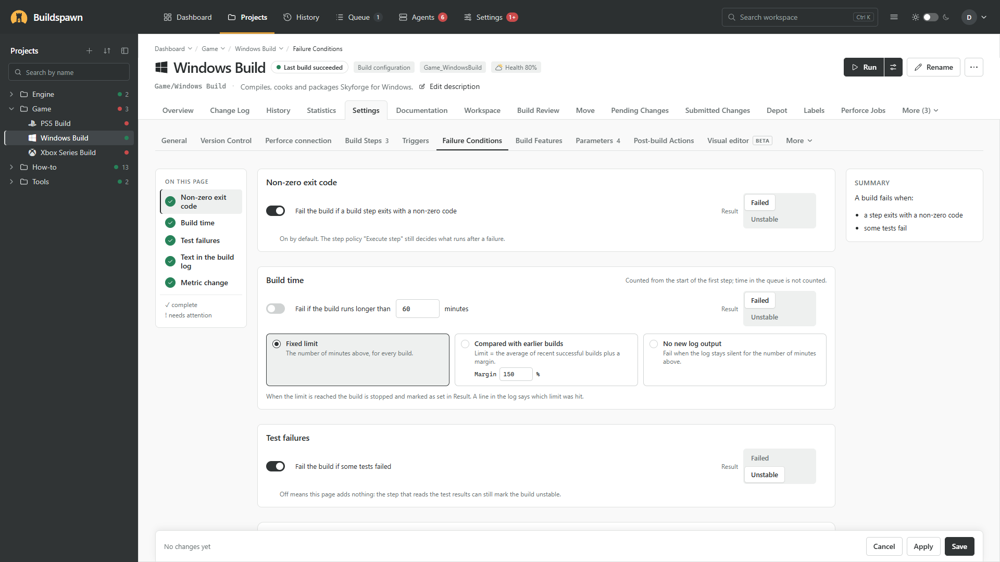

Failure Conditions
Says when a build counts as failed or unstable, besides the exit code of a step.
When to use it
Use it to catch problems that a step does not report: a build that takes too long, a log line such as an out-of-memory error, or a sudden drop in the number of tests. For each condition you choose the Result: Failed or Unstable. A result can only get worse, never better.

How to set it up
- Open the build configuration and click Settings. Then click Failure Conditions.
- Switch on the conditions you need and choose the Result of each.
- Fill in the minutes, the percentages or the log rules.
- Click Save. The card Summary says in words when a build fails.
Every field
| Field | What it does | Default | Example |
|---|---|---|---|
| Non-zero exit code | Fail the build if a build step exits with a non-zero code. The step policy still decides what runs after a failure. Does not apply to a Pipeline. | On, Failed | On |
| Build time: Fixed limit | Fail if the build runs longer than the number of minutes. Counted from the start of the first step; time in the queue is not counted. | Off | 90 minutes |
| Build time: Compared with earlier builds | Limit = the average of recent successful builds plus a margin. Hanging build detection: three times the average, and at least 5 minutes over it. | Off | Margin 150% |
| Build time: No new log output | Fail when the log stays silent for the number of minutes you give. | Off | 20 minutes |
| Test failures | Fail the build if some tests failed. Off adds nothing: the step that reads the tests can still mark the build unstable. | Off | Unstable |
| Text in the build log | Add log condition: a text or pattern that matches, or does not match, a line in the log. Several rules are allowed. Add out-of-memory rule adds a ready-made rule. | None | Out of memory fails |
| Metric change: Test count drops by more than | Compared with the last successful build. Percent. Empty is off. | Empty | 10% |
| Metric change: Artifact size drops by more than | Compared with the last successful build. Percent. Empty is off. | Empty | 20% |
A worked example
The PS5 Build uses Compared with earlier builds with a 150% margin, a log rule that fails the build on LogOutOfMemory, and Artifact size drops by more than 20% as Unstable, to notice a package that lost content.
What you see when it runs
When a limit is reached the build is stopped and marked as you set. A line in the log says which condition fired. The limits are checked every 10 seconds, so a build can stop up to 10 seconds late.
Build stopped: it ran longer than 90 minutes (failure condition Build time)
Problems and fixes
| Problem | What to do |
|---|---|
| The minutes are refused | Use a whole number of minutes in the allowed range. |
| A timeout shows that I did not add | It was set earlier as a build timeout. It is kept and shown here. Changing it here moves it into the failure conditions. |
| The Exit code line is missing | A Pipeline decides what a failed step does, so that condition does not apply. |